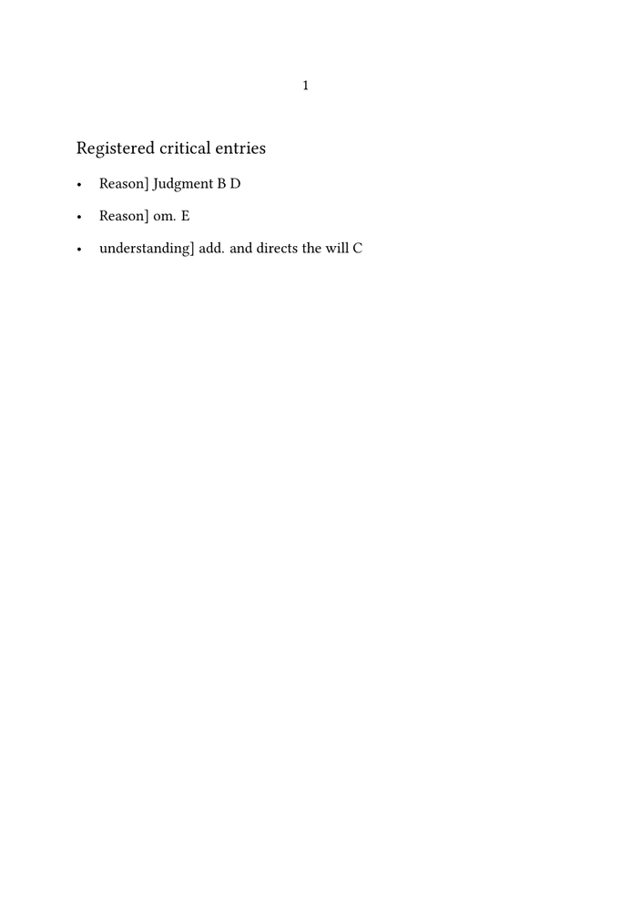
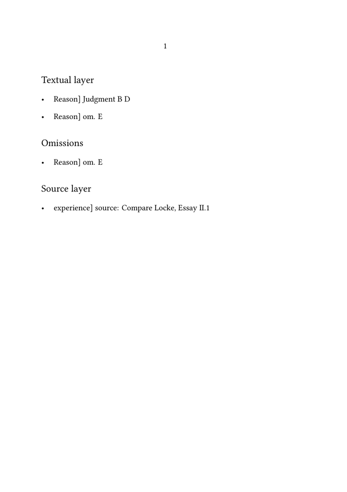
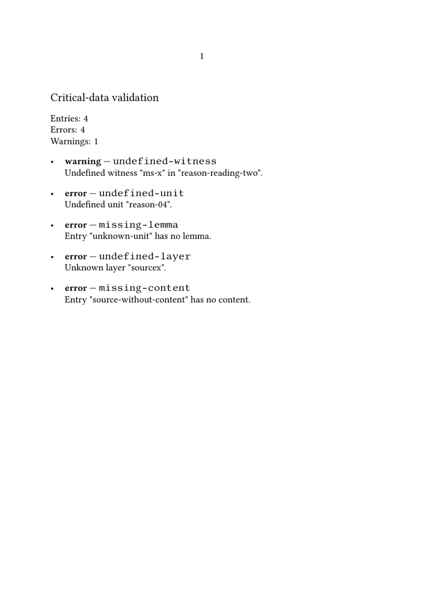

🚧 Work in progress. This guide is currently being drafted, corrected, and reviewed. Please do not modify the code unless this banner has been removed.
Critical apparatus guides: ← Guide 5 — Typesetting an original text and translation in parallel · Orientation · Glossary · Guide 6 of 6 — Final guide
The earlier guides attach formatted apparatus material directly to the text.
That approach is clear and effective for a compact edition, but the internal
parts of an entry are no longer independently available after they have been
combined into a string.
For example:
Reason] Judgment B D; om. E
contains several facts:
| Field | Value |
|---|---|
| Textual unit | reason-01
|
| Position | 1:1
|
| Layer | textual
|
| Editorial operation | reading
|
| Lemma | Reason
|
| Reading | Judgment
|
| Witnesses | ms-b,ms-d
|
When those facts are stored separately, the same collection can be sorted, filtered, validated, and rendered in several forms.
The progression is:
| Stage | Editorial problem | Result |
|---|---|---|
| 1 | A formatted string cannot be queried reliably | Each entry becomes a structured record |
| 2 | Records must be entered from ConTeXt | A stable registration command is exposed |
| 3 | Registration order may not equal textual order | Records are copied, sorted, and filtered |
| 4 | Identifiers and required fields may be wrong | Controlled vocabularies and validation rules are applied |
| 5 | Editors and readers need different outputs | Several views and modes are generated from one registry |
| 6 | Multilingual editions need additional distinctions | Language, target, and lemma level extend the model |
Division of responsibilities. Lua stores, checks, selects, and reorganizes the editorial records. ConTeXt remains responsible for typography, page layout, notes, tables, and publication output.
Contents
- 1 1. Decide when a Lua registry is justified
- 2 2. Design one critical record
- 3 3. Create a project namespace
- 4 4. Register one record from ConTeXt
- 5 5. Render one structured record
- 6 6. Compile the minimal registry MWE
- 7 7. Sort without destroying registration order
- 8 8. Filter records by one criterion
- 9 9. Compile a sorting and filtering MWE
- 10 10. Keep data and presentation separate
- 11 11. Declare controlled vocabularies
- 12 12. Record validation issues
- 13 13. Validate identifiers and required fields
- 14 14. Compile a diagnostic validation MWE
- 15 15. Distinguish formal validation from scholarly judgement
- 16 16. Generate several outputs from one registry
- 17 17. Organize the project files
- 18 18. Keep the public registration interface stable
- 19 19. Advanced extension: multilingual records
- 20 20. Advanced extension: query multilingual data
- 21 21. Recognize the limits of the registry
- 22 22. Test the workflow systematically
- 23 23. Command summary
- 24 24. What this guide has established
- 25 25. Continue with TEI XML when necessary
- 26 Online resources
- 27 Related pages
1. Decide when a Lua registry is justified
Lua is useful when the project must:
- sort entries independently of registration order;
- select records belonging to one witness or layer;
- list only omissions, conjectures, or source notes;
- detect unknown identifiers or missing fields;
- generate both reader-facing and editor-facing outputs;
- separate editorial data from final punctuation and typography.
Direct ConTeXt commands remain preferable when the apparatus is short, stable, and intended for one principal output.
| Editorial model | Suitable when |
|---|---|
| Direct ConTeXt commands | The apparatus is compact and rendered mainly in one form |
| Lua registry | Records must be queried, reordered, checked, or rendered in several forms |
Editorial decision. Lua should be introduced because the data need processing—not merely because the edition is technically sophisticated.
2. Design one critical record
The basic model uses nine public fields:
| Field | Purpose | Example |
|---|---|---|
id
|
Stable record identifier | reason-reading
|
unit
|
Stable textual-unit identifier | reason-01
|
position
|
Sorting key in the form unitorder:entryorder
|
1:2
|
layer
|
Editorial layer | textual
|
kind
|
Editorial operation | reading
|
lemma
|
Edited text to which the record refers | Reason
|
reading
|
Alternative text or explanatory content | Judgment
|
witnesses
|
Comma-separated witness identifiers | ms-b,ms-d
|
responsibility
|
Editor or authority responsible for a decision | Smith
|
Lua parses:
1:2
into:
unitorder = 1 entryorder = 2
Not every field is required for every operation. An omission has no alternative reading, while a conjecture normally requires a responsible editor.
Data-model principle. Store editorial facts, not final punctuation. The
renderer decides later whether an omission appears as om., as a
complete sentence, or in another language.
3. Create a project namespace
Avoid loose global variables. Create one project namespace:
\startluacode
userdata.critical = userdata.critical or { }
local critical = userdata.critical
critical.entries = critical.entries or { }
\stopluacode
The registry is:
critical.entries
The assignment:
local critical = userdata.critical
creates only a shorter local reference. It does not create another registry.
4. Register one record from ConTeXt
First parse the position:
local function parse_position(position)
local unitorder, entryorder =
string.match(position or "", "^(%d+):(%d+)$")
return tonumber(unitorder) or 0,
tonumber(entryorder) or 0
end
Then define the registration function:
function critical.register(
id,
unit,
position,
layer,
kind,
lemma,
reading,
witnesses,
responsibility
)
local unitorder, entryorder =
parse_position(position)
critical.entries[#critical.entries + 1] = {
id = id,
unit = unit,
unitorder = unitorder,
entryorder = entryorder,
layer = layer,
kind = kind,
lemma = lemma,
reading = reading,
witnesses = witnesses,
responsibility = responsibility,
}
end
Expose it to ConTeXt:
interfaces.implement {
name = "registercriticalentry",
public = true,
protected = true,
arguments = {
"string", "string", "string",
"string", "string", "string",
"string", "string", "string",
},
actions = critical.register,
}
Use the generated command:
\registercriticalentry
{reason-reading}
{reason-01}
{1:1}
{textual}
{reading}
{Reason}
{Judgment}
{ms-b,ms-d}
{}
Registration is not rendering. The command adds a record to the Lua registry. Nothing becomes visible until a separate placement command selects and renders records.
5. Render one structured record
Declare the printed sigla separately:
critical.witness_sigla = {
["ms-a"] = "A",
["ms-b"] = "B",
["ms-c"] = "C",
["ms-d"] = "D",
["ms-e"] = "E",
}
Split a comma-separated list:
local function split_identifiers(list)
local result = { }
for identifier in string.gmatch(list or "", "[^,%s]+") do
result[#result + 1] = identifier
end
return result
end
Resolve the sigla:
local function format_witnesses(list)
local result = { }
for _, identifier in ipairs(split_identifiers(list)) do
result[#result + 1] =
critical.witness_sigla[identifier] or
("[" .. identifier .. "]")
end
return table.concat(result, " ")
end
An unknown identifier remains visible:
[ms-x]
Define a renderer:
local function formatted_entry(entry)
local witnesses = format_witnesses(entry.witnesses)
if entry.kind == "omission" then
return entry.lemma .. "] om. " .. witnesses
elseif entry.kind == "addition" then
return entry.lemma .. "] add. " ..
entry.reading .. " " .. witnesses
elseif entry.kind == "conjecture" then
return entry.lemma .. "] conj. " ..
entry.reading .. " " ..
entry.responsibility
else
return entry.lemma .. "] " ..
entry.reading .. " " .. witnesses
end
end
The punctuation now belongs to the renderer rather than to the stored record.
6. Compile the minimal registry MWE
-
\mainlanguage[en] \setuppapersize[A5] \setupbodyfont[libertinus,10pt] \startluacode userdata.critical = userdata.critical or { } local critical = userdata.critical critical.entries = { } critical.witness_sigla = { ["ms-b"] = "B", ["ms-c"] = "C", ["ms-d"] = "D", ["ms-e"] = "E", } local function split_identifiers(list) local result = { } for identifier in string.gmatch(list or "", "[^,%s]+") do result[#result + 1] = identifier end return result end local function format_witnesses(list) local result = { } for _, identifier in ipairs(split_identifiers(list)) do result[#result + 1] = critical.witness_sigla[identifier] or ("[" .. identifier .. "]") end return table.concat(result, " ") end local function parse_position(position) local unitorder, entryorder = string.match(position or "", "^(%d+):(%d+)$") return tonumber(unitorder) or 0, tonumber(entryorder) or 0 end function critical.register( id, unit, position, layer, kind, lemma, reading, witnesses, responsibility ) local unitorder, entryorder = parse_position(position) critical.entries[#critical.entries + 1] = { id = id, unit = unit, unitorder = unitorder, entryorder = entryorder, layer = layer, kind = kind, lemma = lemma, reading = reading, witnesses = witnesses, responsibility = responsibility, } end local function formatted_entry(entry) local witnesses = format_witnesses(entry.witnesses) if entry.kind == "omission" then return entry.lemma .. "] om. " .. witnesses elseif entry.kind == "addition" then return entry.lemma .. "] add. " .. entry.reading .. " " .. witnesses else return entry.lemma .. "] " .. entry.reading .. " " .. witnesses end end function critical.place_all() context.startitemize() for _, entry in ipairs(critical.entries) do context.startitem() context(formatted_entry(entry)) context.stopitem() end context.stopitemize() end interfaces.implement { name = "registercriticalentry", public = true, protected = true, arguments = { "string", "string", "string", "string", "string", "string", "string", "string", "string", }, actions = critical.register, } interfaces.implement { name = "placecriticalentries", public = true, protected = true, actions = critical.place_all, } \stopluacode \registercriticalentry {reason-reading} {reason-01} {1:1} {textual} {reading} {Reason} {Judgment} {ms-b,ms-d} {} \registercriticalentry {reason-omission} {reason-01} {1:2} {textual} {omission} {Reason} {} {ms-e} {} \registercriticalentry {understanding-addition} {understanding-01} {2:1} {textual} {addition} {understanding} {and directs the will} {ms-c} {} \starttext \subject{Registered critical entries} \placecriticalentries \stoptext
-

Expected contents:
Reason] Judgment B D Reason] om. E understanding] add. and directs the will C
7. Sort without destroying registration order
Lua's table.sort changes the table it receives. Copy the registry
before sorting:
local function copy_entries(entries)
local result = { }
for index, entry in ipairs(entries) do
result[index] = entry
end
return result
end
Sort by textual position:
local function sort_entries(entries)
table.sort(entries, function(a, b)
if a.unitorder == b.unitorder then
if a.entryorder == b.entryorder then
return a.id < b.id
end
return a.entryorder < b.entryorder
end
return a.unitorder < b.unitorder
end)
return entries
end
Use:
local selected = sort_entries(
copy_entries(critical.entries)
)
Why copy first? Preserving registration order allows another report to show how the data were entered while the reader apparatus uses textual order.
8. Filter records by one criterion
A witness filter asks whether an identifier occurs in the witness list:
local function has_witness(entry, wanted)
for _, identifier in ipairs(
split_identifiers(entry.witnesses)
) do
if identifier == wanted then
return true
end
end
return false
end
A generic selector reduces repetition:
local function select_entries(test)
local result = { }
for _, entry in ipairs(critical.entries) do
if test(entry) then
result[#result + 1] = entry
end
end
return sort_entries(result)
end
Examples:
local textual = select_entries(
function(entry)
return entry.layer == "textual"
end
)
local omissions = select_entries(
function(entry)
return entry.kind == "omission"
end
)
local witness_b = select_entries(
function(entry)
return has_witness(entry, "ms-b")
end
)
| Selection | Scholarly question |
|---|---|
| Witness | Where does one witness contribute evidence? |
| Layer | Which records belong to textual criticism, translation, or sources? |
| Operation | Where are the omissions, additions, or conjectures? |
9. Compile a sorting and filtering MWE
The following compact MWE registers records out of order and creates three views:
-
\mainlanguage[en] \setuppapersize[A5] \setupbodyfont[libertinus,10pt] \startluacode userdata.critical = userdata.critical or { } local critical = userdata.critical critical.entries = { { id = "source-experience", unitorder = 2, entryorder = 2, layer = "sources", kind = "source", lemma = "experience", reading = "Compare Locke, Essay II.1", witnesses = "", }, { id = "reason-omission", unitorder = 1, entryorder = 2, layer = "textual", kind = "omission", lemma = "Reason", reading = "", witnesses = "ms-e", }, { id = "reason-reading", unitorder = 1, entryorder = 1, layer = "textual", kind = "reading", lemma = "Reason", reading = "Judgment", witnesses = "ms-b,ms-d", }, } critical.witness_sigla = { ["ms-b"] = "B", ["ms-d"] = "D", ["ms-e"] = "E", } local function split_identifiers(list) local result = { } for identifier in string.gmatch(list or "", "[^,%s]+") do result[#result + 1] = identifier end return result end local function format_witnesses(list) local result = { } for _, identifier in ipairs(split_identifiers(list)) do result[#result + 1] = critical.witness_sigla[identifier] or ("[" .. identifier .. "]") end return table.concat(result, " ") end local function sort_entries(entries) table.sort(entries, function(a, b) if a.unitorder == b.unitorder then if a.entryorder == b.entryorder then return a.id < b.id end return a.entryorder < b.entryorder end return a.unitorder < b.unitorder end) return entries end local function select_entries(test) local result = { } for _, entry in ipairs(critical.entries) do if test(entry) then result[#result + 1] = entry end end return sort_entries(result) end local function formatted_entry(entry) local witnesses = format_witnesses(entry.witnesses) if entry.kind == "omission" then return entry.lemma .. "] om. " .. witnesses elseif entry.kind == "source" then return entry.lemma .. "] source: " .. entry.reading else return entry.lemma .. "] " .. entry.reading .. " " .. witnesses end end local function place(entries) context.startitemize() for _, entry in ipairs(entries) do context.startitem() context(formatted_entry(entry)) context.stopitem() end context.stopitemize() end function critical.place_textual() place(select_entries( function(entry) return entry.layer == "textual" end )) end function critical.place_omissions() place(select_entries( function(entry) return entry.kind == "omission" end )) end function critical.place_sources() place(select_entries( function(entry) return entry.layer == "sources" end )) end interfaces.implement { name = "placetextualview", public = true, protected = true, actions = critical.place_textual, } interfaces.implement { name = "placeomissionview", public = true, protected = true, actions = critical.place_omissions, } interfaces.implement { name = "placesourceview", public = true, protected = true, actions = critical.place_sources, } \stopluacode \starttext \subject{Textual layer} \placetextualview \subject{Omissions} \placeomissionview \subject{Source layer} \placesourceview \stoptext
-

The textual view begins with Reason] Judgment B D, even though
that record was registered last.
10. Keep data and presentation separate
A stored omission is:
{
kind = "omission",
lemma = "Reason",
witnesses = "ms-e",
}
It is not stored as:
Reason] om. E
Another renderer could produce:
Witness E omits “Reason” in reason-01.
without modifying the record.
This is the principal conceptual gain of structured data.
11. Declare controlled vocabularies
Validation requires an explicit statement of what the project permits.
critical.known_units = {
["reason-01"] = true,
["experience-01"] = true,
}
critical.valid_layers = {
textual = true,
translation = true,
sources = true,
}
critical.valid_kinds = {
reading = true,
omission = true,
addition = true,
conjecture = true,
translation = true,
source = true,
}
Controlled vocabulary. Values such as textual,
translation, and omission should be declared once.
Otherwise, spelling variants create different categories without warning.
12. Record validation issues
Create a diagnostic list:
critical.validation_issues = { }
local report = logs.reporter("critical apparatus")
local function add_issue(severity, code, message)
critical.validation_issues[
#critical.validation_issues + 1
] = {
severity = severity,
code = code,
message = message,
}
report("%s: %s", severity, message)
end
The validator can continue after finding a problem, so one proof run can report several issues.
13. Validate identifiers and required fields
Useful checks include:
| Check | Typical severity |
|---|---|
| Undefined witness | warning |
| Undefined textual unit | error |
| Unknown layer or operation | error |
| Missing lemma | error |
| Missing content for a reading, addition, conjecture, translation, or source | error |
| Duplicate record identifier | error |
| Duplicate textual position | warning or error according to project policy |
A simple empty-value test is:
local function is_empty(value)
return value == nil or
value:match("^%s*$") ~= nil
end
An omission is deliberately excluded from the rule requiring a reading.
Validation policy. A duplicate position may be legitimate when several records belong to the same textual location. The project must decide whether that case is informational, a warning, or an error.
14. Compile a diagnostic validation MWE
The following MWE intentionally contains invalid records:
-
\mainlanguage[en] \setuppapersize[A5] \setupbodyfont[libertinus,9.5pt] \startluacode userdata.critical = userdata.critical or { } local critical = userdata.critical critical.entries = { } critical.validation_issues = { } critical.ids = { } critical.witness_sigla = { ["ms-b"] = "B", ["ms-c"] = "C", } critical.known_units = { ["reason-01"] = true, ["experience-01"] = true, } critical.valid_layers = { textual = true, sources = true, } critical.valid_kinds = { reading = true, omission = true, source = true, } local report = logs.reporter("critical apparatus") local function is_empty(value) return value == nil or value:match("^%s*$") ~= nil end local function split_identifiers(list) local result = { } for identifier in string.gmatch(list or "", "[^,%s]+") do result[#result + 1] = identifier end return result end local function add_issue(severity, code, message) critical.validation_issues[ #critical.validation_issues + 1 ] = { severity = severity, code = code, message = message, } report("%s: %s", severity, message) end local requires_content = { reading = true, source = true, } local function validate(entry) if critical.ids[entry.id] then add_issue( "error", "duplicate-id", 'Duplicate identifier "' .. entry.id .. '".' ) else critical.ids[entry.id] = true end if not critical.known_units[entry.unit] then add_issue( "error", "undefined-unit", 'Undefined unit "' .. entry.unit .. '".' ) end if not critical.valid_layers[entry.layer] then add_issue( "error", "undefined-layer", 'Unknown layer "' .. entry.layer .. '".' ) end if not critical.valid_kinds[entry.kind] then add_issue( "error", "undefined-kind", 'Unknown operation "' .. entry.kind .. '".' ) end if is_empty(entry.lemma) then add_issue( "error", "missing-lemma", 'Entry "' .. entry.id .. '" has no lemma.' ) end if requires_content[entry.kind] and is_empty(entry.reading) then add_issue( "error", "missing-content", 'Entry "' .. entry.id .. '" has no content.' ) end for _, witness in ipairs(split_identifiers(entry.witnesses)) do if not critical.witness_sigla[witness] then add_issue( "warning", "undefined-witness", 'Undefined witness "' .. witness .. '" in "' .. entry.id .. '".' ) end end end local function register(entry) critical.entries[#critical.entries + 1] = entry validate(entry) end register { id = "reason-reading", unit = "reason-01", layer = "textual", kind = "reading", lemma = "Reason", reading = "Judgment", witnesses = "ms-b", } register { id = "reason-reading-two", unit = "reason-01", layer = "textual", kind = "reading", lemma = "Reason", reading = "Understanding", witnesses = "ms-x", } register { id = "unknown-unit", unit = "reason-04", layer = "textual", kind = "omission", lemma = "", reading = "", witnesses = "ms-c", } register { id = "source-without-content", unit = "experience-01", layer = "sourcex", kind = "source", lemma = "experience", reading = "", witnesses = "", } function critical.place_summary() local errors = 0 local warnings = 0 for _, issue in ipairs(critical.validation_issues) do if issue.severity == "error" then errors = errors + 1 elseif issue.severity == "warning" then warnings = warnings + 1 end end context("Entries: %d\\par", #critical.entries) context("Errors: %d\\par", errors) context("Warnings: %d\\par", warnings) end function critical.place_report() context.startitemize() for _, issue in ipairs(critical.validation_issues) do context.startitem() context("{\\bf %s} — {\\tt %s}\\par", issue.severity, issue.code) context("%s", issue.message) context.stopitem() end context.stopitemize() end interfaces.implement { name = "placevalidationsummary", public = true, protected = true, actions = critical.place_summary, } interfaces.implement { name = "placevalidationreport", public = true, protected = true, actions = critical.place_report, } \stopluacode \starttext \subject{Critical-data validation} \placevalidationsummary \blank \placevalidationreport \stoptext
-

Diagnostic MWE. The invalid records are intentional. This example is designed to demonstrate the reporting mechanism, not to provide data for a real edition.
15. Distinguish formal validation from scholarly judgement
Validation can detect:
- missing fields;
- unknown identifiers;
- inconsistent vocabulary;
- duplicate identifiers;
- invalid combinations defined by the project.
It cannot decide whether:
- a reading is philologically correct;
- a conjecture is convincing;
- a translation is accurate;
- a morphological analysis is sound;
- a cited parallel is historically relevant.
Limit of validation. Lua can verify the formal consistency of recorded scholarship. It cannot perform the scholarship itself.
16. Generate several outputs from one registry
One collection can support:
| Output | Selection | Purpose |
|---|---|---|
| Reader apparatus | textual layer in textual order | publish variants |
| Witness report | records containing one witness | inspect one manuscript |
| Omission catalogue | kind == "omission"
|
review absent passages |
| Conjecture list | kind == "conjecture"
|
review editorial interventions |
| Translation review | translation layer | check terminology |
| Source report | sources layer | collect parallels and allusions |
| Validation proof | all detected issues | check formal consistency |
ConTeXt modes can select the required output:
\startmode[proof] \placevalidationsummary \placevalidationreport \stopmode
Compile with:
context --mode=proof edition.tex
Only the selected presentation changes. The registry remains the same.
17. Organize the project files
Move the Lua implementation into a separate file:
critical-data.lua
Load it with:
\registerctxluafile{critical-data}{}
A useful project structure is:
project/ │ ├── environment/ │ └── env-critical-edition.mkxl │ ├── lua/ │ └── critical-data.lua │ ├── data/ │ └── critical-records.mkxl │ ├── components/ │ └── chapter-01.mkxl │ └── edition.tex
| File | Responsibility |
|---|---|
| Environment | typography, layout, note styles, public commands |
| Lua file | registration, sorting, filtering, validation, reports |
| Data file | record-registration calls |
| Component | edited text and textual-unit references |
| Main document | selected output mode and document assembly |
18. Keep the public registration interface stable
The nine-argument command is a contract:
\registercriticalentry
{id}
{unit}
{unit order:entry order}
{layer}
{operation}
{lemma}
{reading or content}
{witness identifiers}
{responsibility}
The internal Lua representation may later change, provided that this public interface remains compatible.
Interface stability. The ConTeXt command is the boundary between editorial source and Lua implementation. A stable boundary protects the source from internal refactoring.
19. Advanced extension: multilingual records
A multilingual edition needs additional fields:
| Field | Purpose |
|---|---|
language
|
Language of the annotated text |
target
|
Stable identifier of the exact word, phrase, or passage |
lemmalevel
|
word, phrase, or passage
|
lexicallemma
|
Dictionary form used in lexical analysis |
bibliography
|
Stable bibliographical key |
locator
|
Page, section, column, or cited location |
The distinction between unit and target is important:
| Field | Identifies |
|---|---|
unit
|
The larger synchronized passage |
target
|
The exact range annotated by one record |
Controlled lemma levels can be declared as:
critical.valid_lemma_levels = {
word = true,
phrase = true,
passage = true,
}
Scholarly distinction. An apparatus lemma identifies text in the edited passage. A lexical lemma identifies a dictionary form. Store them in separate fields.
20. Advanced extension: query multilingual data
A Greek textual view may select two properties:
local greek_textual = select_entries(
function(entry)
return entry.language == "gr" and
entry.layer == "textual"
end
)
A lexical view may select:
local lexical = select_entries(
function(entry)
return entry.layer == "lexical"
end
)
A passage-level report may select:
local passages = select_entries(
function(entry)
return entry.lemmalevel == "passage"
end
)
One record may appear in several reports because each report asks a different question. This is not duplication of source data.
| Report | Selection | Editorial purpose |
|---|---|---|
| Greek textual records | Greek + textual layer | review Greek variants |
| Latin translation records | Latin + translation layer | inspect translation evidence |
| Lexical records | lexical layer | review lemmas and morphology |
| Bibliographical records | bibliography layer | inspect cited works and locators |
| Passage-level records | passage lemma level | find annotations attached to complete passages |
The reader-facing page and the editorial report remain different outputs. The first is designed for reading; the second is designed for inspection and verification.
21. Recognize the limits of the registry
An embedded Lua registry is appropriate when:
- one project controls both data and output;
- the record model is stable;
- ConTeXt remains the editorial master;
- interchange with external tools is limited.
A dedicated structured format becomes preferable when:
- several institutions share the corpus;
- overlapping or discontinuous annotations must be represented;
- schema-based validation is required;
- the data must outlive one ConTeXt project;
- several independent systems must consume the same data.
At that point, continue with Building critical editions from TEI XML.
22. Test the workflow systematically
Compile separate tests for:
- one valid record;
- records entered out of textual order;
- one witness filter;
- one layer filter;
- one operation filter;
- an undefined witness;
- an undefined unit;
- an unknown layer;
- a missing lemma;
- missing required content;
- a duplicate identifier;
- a duplicate position;
- proof and reader modes;
- an empty view containing no records.
Inspect both:
- the generated PDF;
- the compilation log.
Testing requirement. Successful compilation proves only that the code ran. The PDF, the log, and the validation report must all be inspected before the editorial data are treated as valid.
23. Command summary
| Interface | Purpose |
|---|---|
\registercriticalentry
|
Register one structured record |
\placecriticalentries
|
Print records in registration order |
\placetextualview
|
Print the textual layer in textual order |
\placewitnessview
|
Print records associated with one witness |
\placeomissionview
|
Print omission records |
\placesourceview
|
Print the source layer |
\placevalidationsummary
|
Print record, error, and warning counts |
\placevalidationreport
|
Print the complete diagnostic list |
These are project interfaces created through
interfaces.implement. They are not predefined ConTeXt commands.
24. What this guide has established
The progression is:
formatted apparatus string
│
▼
structured record
│
▼
Lua registry
│
▼
sorting and filtering
│
▼
validation
│
▼
reader and editorial outputs
Final result of the series. The six guides have progressed from a simple page-bottom apparatus to a structured workflow involving witnesses, several annotation layers, parallel texts, stable editorial units, Lua processing, and formal validation.
Lua does not replace:
- editorial judgement;
- ConTeXt typography;
- the critical apparatus read on the page;
- a dedicated interchange format when long-term collaborative exchange is
required.
25. Continue with TEI XML when necessary
The Lua registry is appropriate when the ConTeXt project remains the principal editorial environment.
TEI XML becomes relevant when the edition requires:
- a formally documented interchange vocabulary;
- collaborative work across several tools or institutions;
- long-term preservation independent of one typesetting system;
- complex overlapping or discontinuous annotation;
- schema-based validation;
- several outputs not controlled by one ConTeXt project.
The complementary collection begins at:
Building critical editions from TEI XML
Online resources
- ConTeXt and Lua programming — orientation for Lua programming in ConTeXt;
- ConTeXt and Lua programming/ConTeXt Lua Documents CLD — generating ConTeXt content from Lua;
- ConTeXt and Lua programming/Tutorials/Programming in LuaTeX — calling Lua from TeX and TeX from Lua;
- ConTeXt and Lua programming/Tutorials/System Macros/Key Value Assignments — key–value interfaces;
- Modes — proof, validation, and publication outputs;
- Command/environment — loading shared project definitions;
- TEI xml — XML and TEI processing.
Related pages
- Building a critical apparatus with ConTeXt
- Glossary of critical edition terms
- Building a simple critical apparatus
- Formatting a critical apparatus
- Managing witnesses and textual variants
- Using multiple apparatus layers
- Typesetting an original text and translation in parallel
- Building critical editions from TEI XML
Critical apparatus guides: ← Guide 5 — Typesetting an original text and translation in parallel · Orientation · Glossary · Guide 6 of 6 — End of guides